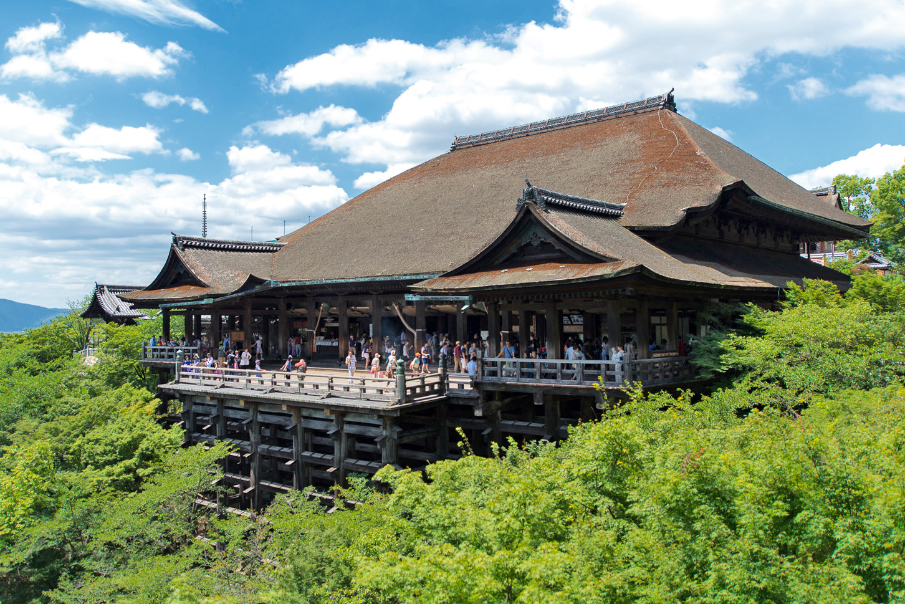
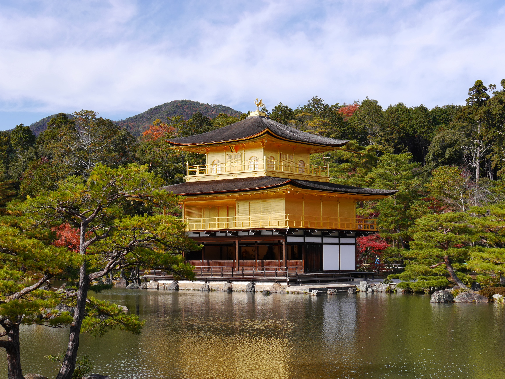
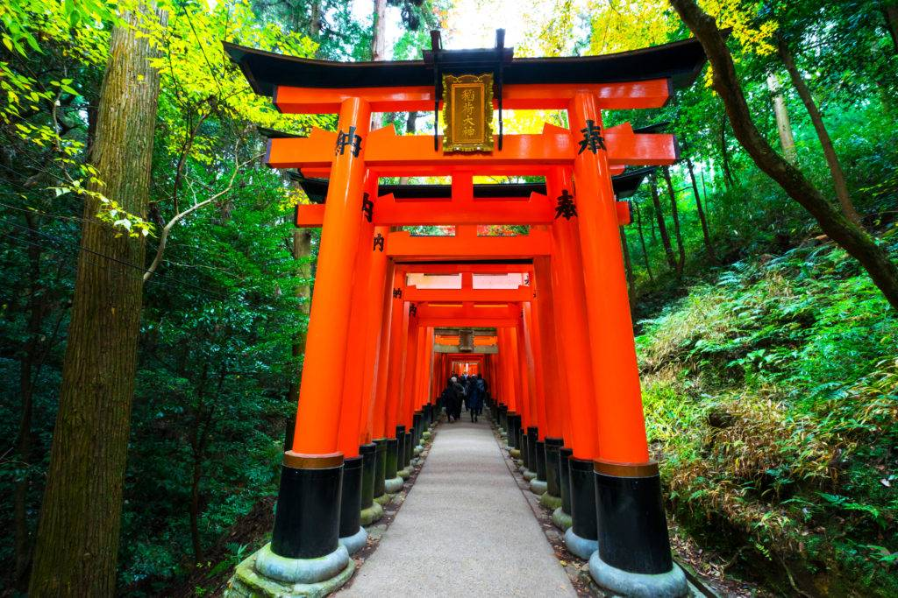
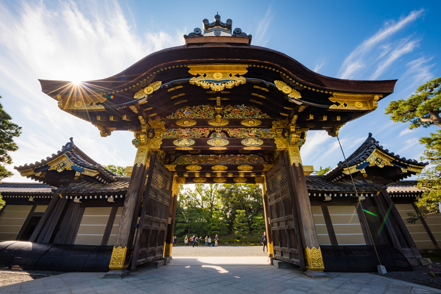

Discover Kyoto
Kyoto is at the heart of traditional Japan
Top Tourist Locations
Kiyomizu-dera

Kinkaku-ji

Fushimi Inari Taisha

Nijo Castle

Sample 3-Day Itinerary
Day
Activities
1
Visit Temples
2
Bamboo Grove & River Exploration
3
Shopping & Food Tour